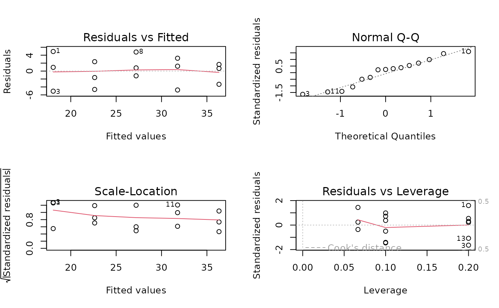

Level of apolipoprotein B and number of cups of coffee consumed per day for 15 adult males
Data used in Examples 9.2 and 9.9
Apolipop
Format
A data frame/tibble with 15 observations on the following two variables.
- coffee
number of cups of coffee per day
- apolipB
level of apoliprotein B
References
Kitchens, L. J. (2003) Basic Statistics and Data Analysis. Duxbury
Examples
plot(apolipB ~ coffee, data = Apolipop)linmod <- lm(apolipB ~ coffee, data = Apolipop) summary(linmod)#> #> Call: #> lm(formula = apolipB ~ coffee, data = Apolipop) #> #> Residuals: #> Min 1Q Median 3Q Max #> -5.067 -2.483 0.800 2.017 4.933 #> #> Coefficients: #> Estimate Std. Error t value Pr(>|t|) #> (Intercept) 13.500 2.089 6.461 2.13e-05 *** #> coffee 4.567 0.630 7.249 6.46e-06 *** #> --- #> Signif. codes: 0 ‘***’ 0.001 ‘**’ 0.01 ‘*’ 0.05 ‘.’ 0.1 ‘ ’ 1 #> #> Residual standard error: 3.45 on 13 degrees of freedom #> Multiple R-squared: 0.8017, Adjusted R-squared: 0.7864 #> F-statistic: 52.55 on 1 and 13 DF, p-value: 6.465e-06 #>summary(linmod)$sigma#> [1] 3.450381anova(linmod)#> Analysis of Variance Table #> #> Response: apolipB #> Df Sum Sq Mean Sq F value Pr(>F) #> coffee 1 625.63 625.63 52.552 6.465e-06 *** #> Residuals 13 154.77 11.91 #> --- #> Signif. codes: 0 ‘***’ 0.001 ‘**’ 0.01 ‘*’ 0.05 ‘.’ 0.1 ‘ ’ 1anova(linmod)[2, 3]^.5#> [1] 3.450381par(mfrow = c(2, 2)) plot(linmod)par(mfrow = c(1, 1))